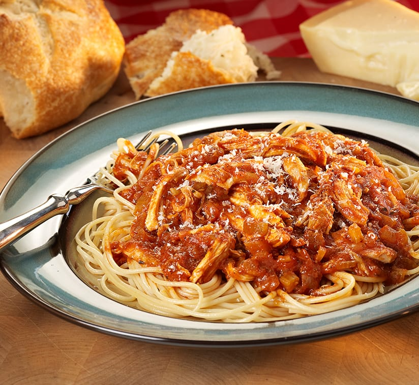

Chicken Spaghetti

Simple. Delicious. Classically Hispanic.
Chicken spaghetti is exactly what it sounds like: a classic Mexican
recipe handed down from one generation to the next.
Ingredients
- One scrawny chicken
- Two tomatoes from Abuela's Jardin
- 2 eggs from the chicken
- 1 block of Cotija
- 2 kg of flour
Directions
- Grab two bowls: one for dry ingredients and one for wet.
-
In the wet bowl, crush the tomatoes until they develop an even
consistency. Once finished, add eggs. If it was raining when you
grabbed the chicken, throw it in too.
-
In the dry bowl, mix the block of Cotija with 2kg of flour and chicken
(only if the chicken isn't wet).
- Mix contents of both bowls individually until chicken escapes
-
Once chicken escapes, grab it and read it a story. At this time, you
may optionally eat a cookie.
-
When chicken has fallen asleep on your lap, set it aside and return
to the bowls
-
Continue to mix them both vigorously. Once sufficiently mixed, combine
the contents of each into a full fish tank. WARNING: This recipe won't work
if there are any fish in the tank.
-
At this stage, some of the contents should be floating. Grab a TIG welder
from your kitchen and attach ground to the edge of your fish tank. Make
sure it is slightly submerged. Proceed to create an arc between the
welder tip and any floating food.
-
Repeat the above step until food is cooked to your liking!
-
Enjoy and salud!